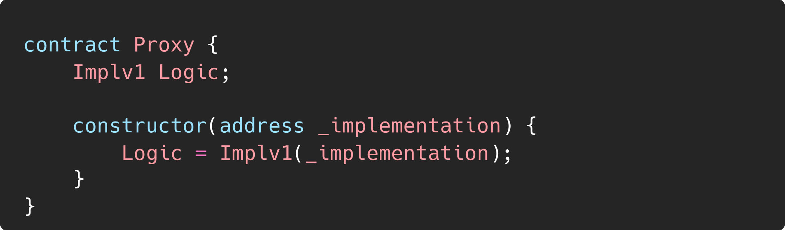
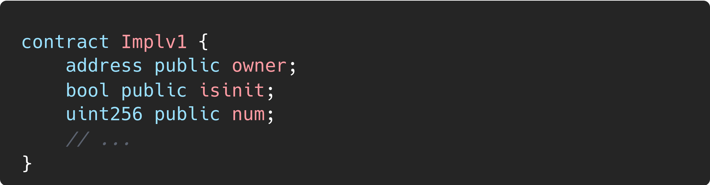
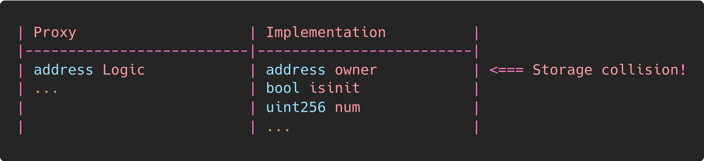
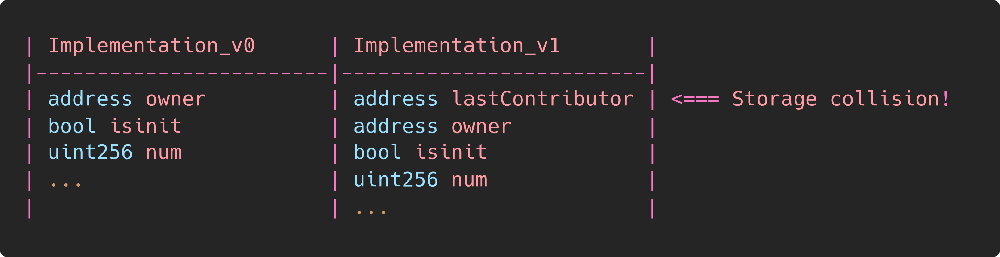
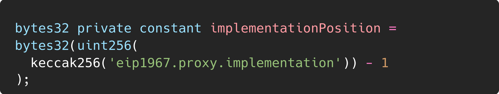

Improper Storage Layout |
|
| Organization | DeepStack Software Pvt. Ltd. |
|---|---|
| Org URL | https://www.deepstacksoft.com |
Posted on: 2024-09-18
One common problem that arises when using proxies
is storage collision. This occurs when the implementation contract reads
from or writes to a storage variable that occupies a different slot in
the proxy contract than it does in the implementation contract.
  
Storage collisions can also occur between different versions of an
implementation contract

To avoid storage collisions, instead of storing the implementation
address at the first storage slot of the proxy, a pseudo-random slot is
chosen using EIP-1967

When extending the storage layout, it is crucial to append new variables rather than inserting or deleting them from between existing ones. This approach ensures that the layouts remain completely independent and do not interfere with each other’s variable locations.